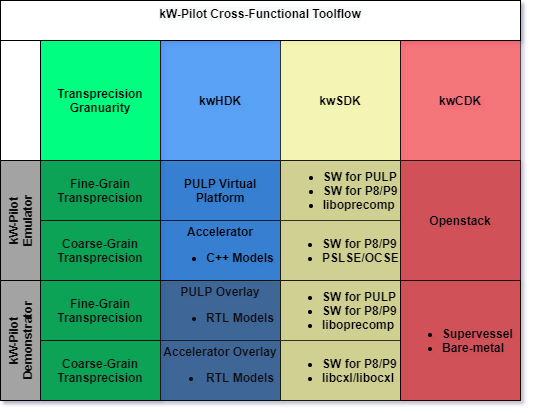
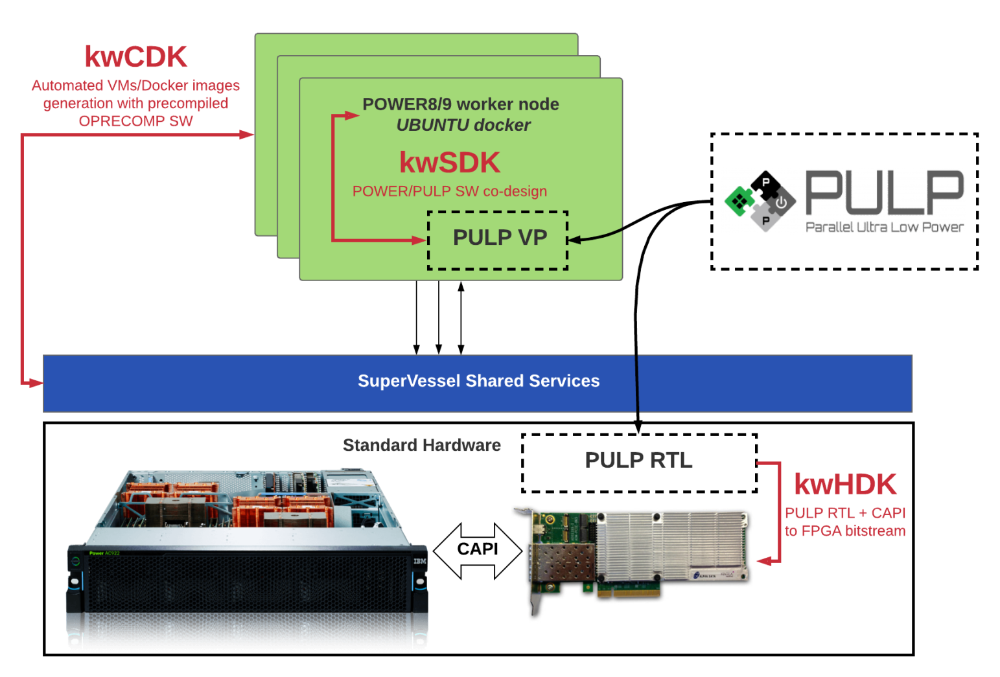

Overview¶
This page describes the system architecture of the OPRECOMP kW platform.
The goal is to develop one computation node of an HPC system, based on a high-performance processing node (IBM POWER 8/9) and an array of interconnected controllable precision processors. The OPRECOMP kW demonstrator platform provides an evaluation framework to investigate scalability and functionality of the software stack. This platform is one node of an HPC system with transprecision capabilities.
The kwPilot demonstrator is developed in two stages. In the first phase, the system is based on existing POWER8 - CAPI (Coherent Accelerator Processor Interface) attached FPGA prototyping system developed by IBM. The POWER8 processor is used for precise calculations, and an interconnected array of PULP based processing units with controllable precision is implemented on the FPGA.
In the second phase, we have upgraded the node to a POWER9, with CAPI 2.0 connection to an advanced version of PULP, on a large-scale FPGA. This system is used to validate the approach.
The actual power and performance numbers will be extracted through measurements on a dedicated ASIC that will be manufactured containing an array of the PULP based transprecision computation cores. Finally, the results on the kW system will be evaluated and they will be further projected up to a potential multi-node MW architecture.
The first version of our kw demonstrator, namely, the kW-Pilot 1.0 platform, has been developed within the first phase specifications, i.e. POWER8 - CAPI1.0 attached FPGA prototyping platform.
The final version of our kw demonstrator, namely, the kW-Pilot 2.0 platform, has been developed within the final phase specifications, i.e. POWER9 - CAPI2.0 attached FPGA prototyping platform.
The development of the OPRECOMP kw-pilot is systematically developed in three pillars, namely the kw-pilot Hardware Development Kit (kwHDK), the kw-pilot Software Development Kit (kwSDK) and the kw-pilot Cloud Development Kit (kwCDK)
The kw-pilot Hardware Development Kit (HDK) considers transprecision devices attached to a POWER8/9 node via CAPI1.0/CAPI2.0 or OpenCAPI3.0. We have experimented with inserting transprecision computing capabilities in different granularity levels. Specifically the transprecision devices can be either PULP cores or standalone acceleratos. In the former case the transprecision computing capabilities have been introduced at the instruction level, whereas at the latter case, we have designed customized hardware accelerators suppporting different precision across the computation progress.
The kw-pilot Software Development Kit (SDK) describes the programming environment that enables the mapping of applications to this kw-pilot platform.
The kw-pilot Cloud Development Kit (CDK) integrates the kW-Pilot platform to a cloud infrastructure of IBM Zurich Lab.
The kwHDK, the kwSDK and the kwCDK are supported by different design tools, libraries and APIs as depicted in the following figure.
Fine-Grain Transprecision Computing¶
In the fine-grain transprecision aspect of our kW-Pilot platform, we define a high-performance processing node (IBM POWER 8/9) and an array of interconnected controllable precision PULP processors (https://pulp-platform.org/). The development of the OPRECOMP kw-pilot is systematically developed in three pillars, namely the kw-pilot Hardware Development Kit (kwHDK), the kw-pilot Software Development Kit (kwSDK) and the kw-pilot Cloud Development Kit (kwCDK), as depicted in the following figure.
The kw-pilot Hardware Development Kit (HDK.
The kw-pilot Software Development Kit (SDK) describes the programming environment that enables the mapping of applications to this kw-pilot platform.
The kw-pilot Cloud Development Kit (CDK) integrates the kW-Pilot platform to a cloud infrastructure of IBM Zurich Lab.
kwHDK¶
The repository with the approrpiate files for kwHDK is PowerPULP.
git clone git@iis-git.ee.ethz.ch:oprecomp/powerpulp.git
This repository contains PowerPULP, a PULP system attached to a IBM POWER8/9 machine via the CAPI interface. We currently support the following combinations:
board
ad8k5, designxcku115, partxcku115-flva1517-2-eboard
adku3, designxcku060, partxcku060-ffva1156-2-e
Getting Started¶
This project uses bender [1] for dependency management (kind of), so make sure that is installed if you want to change IPs. To get started, do the following:
Set the following environment variables to something reasonable for your setup:
export VSIM="vsim-10.7b -64"export VLOG="vlog-10.7b -64"export VCOM="vcom-10.7b -64"export VOPT="vopt-10.7b -64"export VIVADO="vivado-2019.1.1 vivado"
Flow¶
To synthesize and implement the design for an FPGA, proceed as follows:
generate the IPs needed for
capi_adaptersynthesize ``capi_adapter`</del>`synthesize ``pulp_cluster`</del>`synthesize ``pulp_soc`</del>`synthesize ``pulp_top`</del>`synthesize and implement the entire board
Refer to scripts/end_to_end.sh for a full end-to-end example. The outbut *.bit and *.bin file can then be used to flash the corresponding FPGA card.
Simulation¶
The module hierarchy is structured as follows:
card top-level (see
capirepository)pulp_tophero_powerpulppulp_cluster(multiple)riscv_core(multiple)
The following testbenches are available:
tb_pslseto simulatepulp_toptogether with the CAPI interfacetb_socto simulatehero_powerpulp, where the host memory is emulated as a regular AXI memory
To compile Xilinx sim libraries (needed only onece), run the script compile_simlibs.sh.
To perform a simulation of the PULP system with emulated host, in VSIM source the script scripts/vsim/compile.tcl first, and then scripts/vsim/run_soc.tcl after changing the binary to load in that script as desired.
In order to run a full simulation with a running pslse on your machine, make sure to have run the scripts/vsim/compile.tcl script in your working directory first.
Then, you’ll need three terminals to do the following:
First, start the RTL simulation with
scripts/vsim/run_pslse.sh(orscripts/vsim/run_pslse.tclif you’re already in vsim), and run it (run -all). This will open a server on a local port that a pslse instance can connect to. Simulation time will not advance here unless started through this port.In a second terminal, launch
pslsewhich will connect to the simulator and in turn offer the pslse server on another port. See instructions on building pslse in thecapirepository.Lastly, run your host application in a third
FPGA Bitstreams¶
This is a summary table of FPGA implmentations for the kw-Pilot, during the course of the OPRECOMP H2020 project.
Host |
Transprecision Device |
Comm/tion |
FPGA |
Description |
Publication |
|---|---|---|---|---|---|
PULP Overlay |
|||||
Accelerator Overlay |
|||||
Accelerator Overlay |
N/A |
||||
Accelerator Overlay |
|||||
Accelerator Overlay |
|||||
Accelerator Overlay |
PHRYCTORIA |
||||
DDR4 Controller |
N/A |
Note: Bitstreams can be generated by following the implementation flow provided in the corresponding repository.
kwSDK¶
The source code for the kW demonstrator software and extensions to the virtual platform is maintained inside OPRECOMP’s repository.
It consists of the following parts:
boot: The bootloader that is embedded in the accelerator on a boot ROM. Loads a binary from host memory and executes it.
libcxl: Simulation implementation of libcxl to interface with the virtual platform.
liboprecomp: Library to offload PULP binaries onto the accelerator in conjunction with the bootloader.
Note that these are automatically included with the PULP SDK. So if you’re using the SDK, the above is already available.
Samples¶
The samples directory contains examples on how to write software on the POWER8 and PULP side and how to establish communication via CAPI. See the samples’ Makefiles for instructions on how to link against libcxl and liboprecomp. The following samples are available:
samples/nop: Sends a WED to the PULP side which in turn prints it to the console.
samples/square: Generates a list of random integers and sends them to PULP to calculate their squares, then checks the result. This example includes DMA transfers and the setup of a proper Work Element Descriptor.
Use make run in any of the sample directories to build the host and PULP binaries, and run them in the virtual platform. See the Makefiles for details.
Setup on POWER8¶
On a fresh POWER8 system, do the following to get a minimal setup that allows you to offload code to a PULP system on an FPGA attached to the machine.
# install libcxl
git clone https://github.com/ibm-capi/libcxl.git
pushd libcxl
git checkout v1.6
make
sudo make install
popd
# install liboprecomp
pushd liboprecomp
make
sudo make install
popd
Coarse-Grain Transprecision Computing¶
In the coarse-grain transprecision aspect of our kW-Pilot platform, we define a high-performance processing node (IBM POWER 8/9) and an array of interconnected controllable precision accelerators. We have extended the open-source OC-Accel framework of OpenPOWER consortium with transprecision capabilities. The OpenCAPI Transprecision Acceleration Framework, abbreviated as OC-Accel-TP, is a framework that helps you implement your FPGA acceleration solutions with OpenCAPI technology. The framework is a fork of OC-Accel Framework, that also includes some examples with transprecision capabilities.
https://github.com/oprecomp/oc-accel-tp
In this case, we define:
The kw-pilot Hardware Development Kit (HDK
Core design: https://github.com/oprecomp/oc-accel-tp/tree/master/hardware
Transprecision extensions: https://github.com/oprecomp/oc-accel-tp/tree/master/transprecision
The kw-pilot Software Development Kit (SDK) describes the programming environment that enables the mapping of applications to this kw-pilot platform.
The kw-pilot Cloud Development Kit (CDK) integrates the kW-Pilot platform to a cloud infrastructure of IBM Zurich Lab.